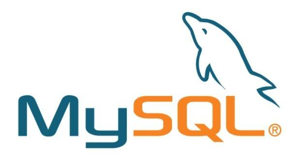

Olá, me chamo Thiago Vinicius. Tenho 27 anos de idade, sou do estado de Pernambuco e resido na região metropolitava de Recife. Sou formado em Técnico em Eletrônica, pelo Instituto Federal de Pernambuco (IFPE). Estou em processo de migração de carreira para área de tecnologia da informação (T.I.). Sou estudante de Analise e desenvolvimento de Sistemas (ADS) na Faculdade Católica Imaculada Conceição do Recife FICR, minha formação foi iniciada em 2024.1. Tenho um forte interesse em Ciências de dados, estou dedicado a adquirir experiência prática e conhecimentos sólidos nessa área empolgante.
Você conhece a AWS?
Navegue pela minha página: Minhas experiências. Meu repositorio. Meus conhecimentos. Redes sociais. Meus contatos.
Possuo habilidades em coleta, limpeza e visualização de dados, juntamente com conhecimentos em linguagens de programação como Python, Java e SQL. Consigo apresentar esses dados brevemente analisados em um dashboard utilizando a ferramenta do Power BI (Business Intelligence). Tambem tenho conhecimentos em computação em nuvem , especificamente com ferramentas da provedora AWS.



Confira meus projetos no GitHub.
- Discord; - Instagram; - LinkedIn - Orkut.
Para dúvidas e sugestões, clique aqui